Model Identification: Fitting models to data#
Given the data from an identification experiment, the next task is to find one or more models that accurately reproduce the process response to changes in the manipulated variable. This notebook demonsrates a practical approach to fitting low-order models to step response data.
Initializations#
%matplotlib inline
import matplotlib.pyplot as plt
import numpy as np
import pandas as pd
from scipy.integrate import odeint
from scipy.optimize import minimize
Reading data#
The following cell reads previously stored experimental step response data.
df = pd.read_csv("tclab-data.csv")
t = np.array(df["Time"])
T1 = np.array(df["T1"])
T2 = np.array(df["T2"])
Q1 = np.array(df["Q1"])
Q2 = np.array(df["Q2"])
Plotting function#
The following simple data plotting function is used in this notebooke to compare experimental data to model predictions.
def plot_data(t, T, T_pred, Q):
fig = plt.figure(figsize=(8,5))
grid = plt.GridSpec(4, 1)
ax = [fig.add_subplot(grid[:2]), fig.add_subplot(grid[2]), fig.add_subplot(grid[3])]
ax[0].plot(t, T, t, T_pred)
ax[0].set_ylabel("deg C")
ax[0].legend(["T", "T_pred"])
ax[1].plot(t, T_pred - T)
ax[1].set_ylabel("deg C")
ax[1].legend(["T_pred - "])
ax[2].plot(t, Q)
ax[2].set_ylabel("%")
ax[2].legend(["Q"])
for a in ax: a.grid(True)
ax[-1].set_xlabel("time / seconds")
plt.tight_layout()
plot_data(t, T1, T1, Q1)
plot_data(t, T2, T2, Q2)
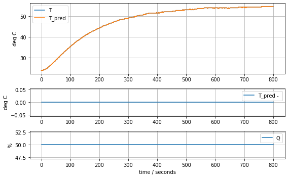
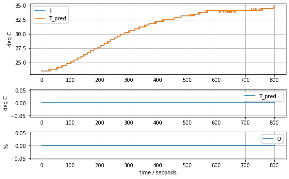
Empirical Models#
Empirical modeling is a process in which we attempt to discover models that accurately describe the input-output behavior of a process without regard to the underlying mechanisms.
First-order linear model#
A first-order transfer function is modeled by the differential equation
where \(y\) is the ‘deviation’ of the process variable from a nominal steady state, and \(u\) is the deviation in manipulated variable from a nominal steady state. For the temperature control lab we will assign the deviation variables as follows:
Parameter \(K\) is the process gain which can be estimated as the ratio of the a steady-state change in \(y\) due to a steady-state change in \(u\). Parameter \(\tau\) is the first-order ‘time constant’ which can be estimated as the time to achieve 63.2% of the steady-state change in output to due a steady-state change in \(u\).
def model_first_order(param, plot=False):
# access parameter values
K, tau = param
# simulation in deviation variables
u = lambda ti: np.interp(ti, t, Q1)
def deriv(y, ti):
dydt = (K*u(ti) - y)/tau
return dydt
y = odeint(deriv, 0, t)[:,0]
# comparing to experimental data
T_ambient = T1[0]
T1_pred = y + T_ambient
if plot:
print("K =", K, "tau =", tau)
plot_data(t, T1, T1_pred, Q1)
return np.linalg.norm(T1_pred - T1)
param_first_order = [0.62, 180.0]
model_first_order(param_first_order, plot=True)
K = 0.62 tau = 180.0
24.649520390255464
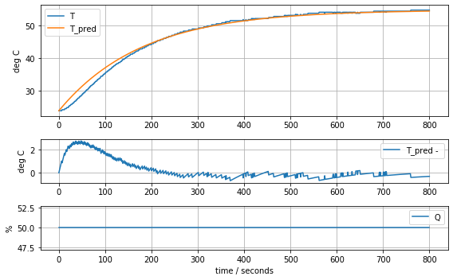
results = minimize(model_first_order, param_first_order, method='nelder-mead')
param_first_order = results.x
model_first_order(param_first_order, plot=True)
K = 0.6370841237049034 tau = 199.8617397701267
20.651093155278453
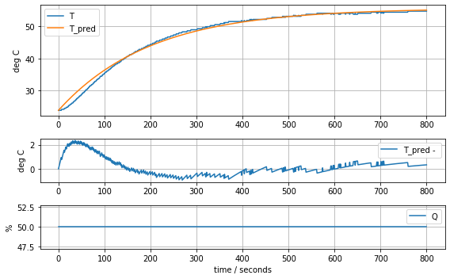
First-order linear model with time delay#
The code cell below
def model_first_order_time_delay(param, plot=False):
# access parameter values
K, tau, tdelay = param
# simulation in deviation variables
u = lambda ti: np.interp(ti, t, Q1, left=0)
def deriv(y, ti):
dydt = (K*u(ti-tdelay) - y)/tau
return dydt
y = odeint(deriv, 0, t)[:,0]
# comparing to experimental data
T_ambient = T1[0]
T1_pred = y + T_ambient
if plot:
print("K =", K, "tau =", tau, "tdelay =", tdelay)
plot_data(t, T1, T1_pred, Q1)
return np.linalg.norm(T1_pred - T1)
param_first_order_time_delay = [0.62, 160.0, 15]
model_first_order_time_delay(param_first_order_time_delay, plot=True)
K = 0.62 tau = 160.0 tdelay = 15
16.12137889182889
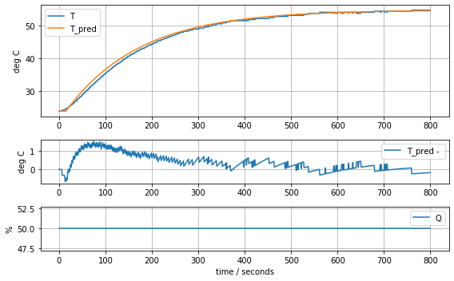
results = minimize(model_first_order_time_delay, param_first_order_time_delay, method='nelder-mead')
param_first_order_time_delay = results.x
model_first_order_time_delay(param_first_order_time_delay, plot=True)
K = 0.6228198545524255 tau = 167.7567962566444 tdelay = 20.18136187851927
6.290512704413097
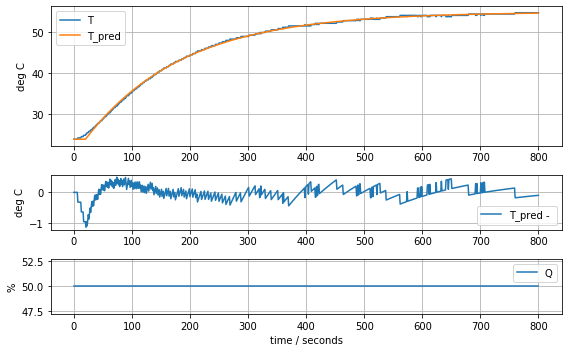
First-principles modeling#
First-order energy balance for one heater#
Assuming the heater/sensor assembly can be described as mass at uniform temperature that exchanges heat with the surrounding results in a first-order linear model.
The model can be rearranged into the form of a first order system with time constant \(\tau\) and gain \(K\)
Using the previous results gives estimates for \(K\) and \(\tau\).
P = 0.04
K, tau = param_first_order
Ua = P/K
print("Heat transfer coefficient Ua =", Ua, "watts/degree C")
Cp = tau*P/K
print("Heat capacity =", Cp, "J/deg C")
Heat transfer coefficient Ua = 0.06278605683560866 watts/degree C
Heat capacity = 12.548530552470801 J/deg C
def model_heater(param, plot=False):
# access parameter values
T_ambient, Cp, Ua = param
P1 = 0.04
# simulation in deviation variables
u = lambda ti: np.interp(ti, t, Q1)
def deriv(TH1, ti):
dT1 = (Ua*(T_ambient - TH1) + P1*u(ti))/Cp
return dT1
T1_pred = odeint(deriv, T_ambient, t)[:,0]
# comparing to experimental data
if plot:
print("Cp =", Cp, "Ua =", Ua)
plot_data(t, T1, T1_pred, Q1)
return np.linalg.norm(T1_pred - T1)
param_heater = [T1[0], Cp, Ua]
model_heater(param_heater, plot=True)
Cp = 12.548530552470801 Ua = 0.06278605683560866
20.651088966149587
results = minimize(model_heater, param_heater, method='nelder-mead')
param_heater = results.x
model_heater(param_heater, plot=True)
Cp = 10.313205580961114 Ua = 0.05862920031801483
10.630933447435487
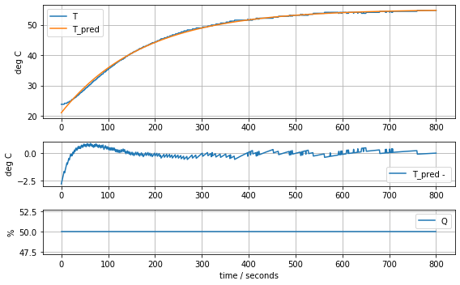
Two State Model#
def model_heater_sensor(param, plot=False):
# access parameter values
T_ambient, Cp_H, Cp_S, Ua, Uc = param
P1 = 0.04
# simulation in deviation variables
u = lambda ti: np.interp(ti, t, Q1)
def deriv(T, ti):
T_H1, T_S1 = T
dT_H1 = (Ua*(T_ambient - T_H1) + Uc*(T_S1 - T_H1) + P1*u(ti))/Cp_H
dT_S1 = Uc*(T_H1 - T_S1)/Cp_S
return [dT_H1, dT_S1]
T1_pred = odeint(deriv, [T_ambient, T_ambient], t)[:,1]
# comparing to experimental data
if plot:
print(param)
plot_data(t, T1, T1_pred, Q1)
return np.linalg.norm(T1_pred - T1)
param_heater_sensor = [T1[0], Cp, Cp/5, Ua, Ua]
model_heater_sensor(param_heater_sensor, plot=True)
[23.81, 12.548530552470801, 2.50970611049416, 0.06278605683560866, 0.06278605683560866]
89.2722844989071
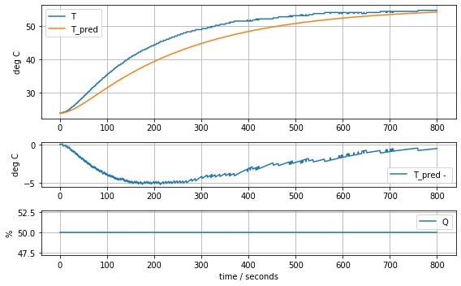
results = minimize(model_heater_sensor, param_heater_sensor, method='nelder-mead')
param_heater_sensor = results.x
model_heater_sensor(param_heater_sensor, plot=True)
[23.71861419 6.88125133 2.74272516 0.06428723 0.07897125]
4.554156209522013
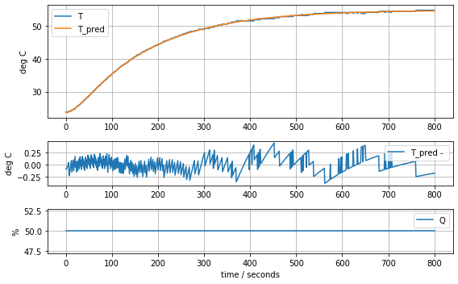
Two heater, four state model#
def model_complete(param, plot=False):
# access parameter values
T_ambient, Cp_H, Cp_S, Ua, Ub, Uc = param
P1 = 0.04
# simulation in deviation variables
u = lambda ti: np.interp(ti, t, Q1)
def deriv(T, ti):
T_H1, T_S1, T_H2, T_S2 = T
dT_H1 = (Ua*(T_ambient - T_H1) + Ub*(T_H2 - T_H1) + Uc*(T_S1 - T_H1) + P1*u(ti))/Cp_H
dT_S1 = Uc*(T_H1 - T_S1)/Cp_S
dT_H2 = (Ua*(T_ambient - T_H2) + Ub*(T_H1 - T_H2) + Uc*(T_S2 - T_H2))/Cp_H
dT_S2 = Uc*(T_H2 - T_S2)/Cp_S
return [dT_H1, dT_S1, dT_H2, dT_S2]
T_pred = odeint(deriv, [T_ambient, T_ambient, T_ambient, T_ambient], t)
T1_pred = T_pred[:,1]
T2_pred = T_pred[:,3]
# comparing to experimental data
if plot:
print(param)
plot_data(t, T1, T1_pred, Q1)
plot_data(t, T2, T2_pred, Q1)
return (np.linalg.norm(T1_pred - T1) + np.linalg.norm(T2_pred - T2))/2
param_complete = [T1[0], Cp, Cp/5, Ua, Ua, Ua]
model_complete(param_complete, plot=True)
[23.81, 12.548530552470801, 2.50970611049416, 0.06278605683560866, 0.06278605683560866, 0.06278605683560866]
143.87441921309681
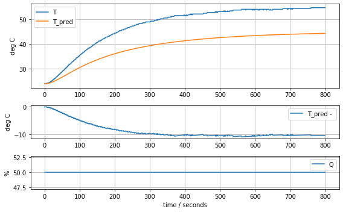
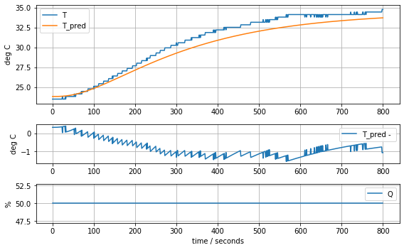
results = minimize(model_complete, param_complete, method='nelder-mead')
param_complete = results.x
model_complete(param_complete, plot=True)
[23.60707391 6.92707544 1.61783224 0.04676309 0.02633501 0.04303801]
4.441799745669341
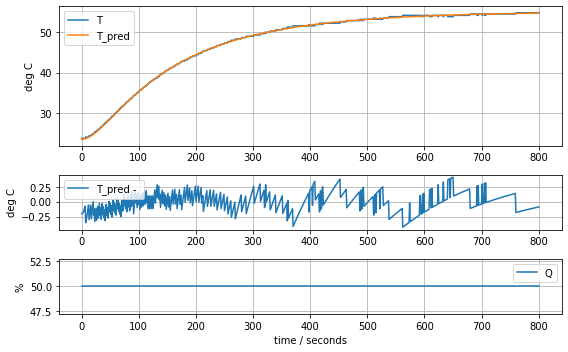
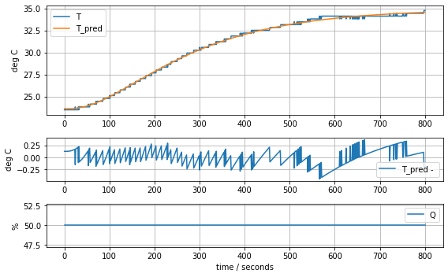
Consequences#
def model_complete(param, plot=False):
# access parameter values
T_ambient, Cp_H, Cp_S, Ua, Ub, Uc = param
P1 = 0.04
# simulation in deviation variables
u = lambda ti: np.interp(ti, t, Q1)
def deriv(T, ti):
T_H1, T_S1, T_H2, T_S2 = T
dT_H1 = (Ua*(T_ambient - T_H1) + Ub*(T_H2 - T_H1) + Uc*(T_S1 - T_H1) + P1*u(ti))/Cp_H
dT_S1 = Uc*(T_H1 - T_S1)/Cp_S
dT_H2 = (Ua*(T_ambient - T_H2) + Ub*(T_H1 - T_H2) + Uc*(T_S2 - T_H2))/Cp_H
dT_S2 = Uc*(T_H2 - T_S2)/Cp_S
return [dT_H1, dT_S1, dT_H2, dT_S2]
T_pred = odeint(deriv, [T_ambient, T_ambient, T_ambient, T_ambient], t)
T1_pred = T_pred[:,1]
T2_pred = T_pred[:,3]
# comparing to experimental data
if plot:
print(param)
plot_data(t, T_pred[:,1], T_pred[:,0], Q1)
plot_data(t, T_pred[:,3], T_pred[:,2], Q1)
return (np.linalg.norm(T1_pred - T1) + np.linalg.norm(T2_pred - T2))/2
model_complete(param_complete, plot=True)
[23.60707391 6.92707544 1.61783224 0.04676309 0.02633501 0.04303801]
4.441799745669341
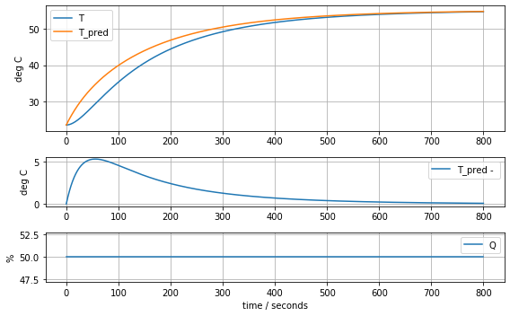
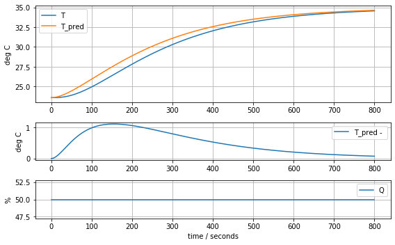
State-Space Model#
Recalling the model equations
Normalizing the derivatives
Gathering terms on the right hand side
State space model
Matrix/vector formulation
P1 = 0.04
P2 = 0.02
T_ambient, Cp_H, Cp_S, Ua, Ub, Uc = param_complete
A = np.array([[-(Ua + Ub + Uc)/Cp_H, Uc/Cp_H, Ub/Cp_H, 0],
[Uc/Cp_S, -Uc/Cp_S, 0, 0],
[Ub/Cp_H, 0, -(Ua + Ub + Uc)/Cp_H, Uc/Cp_H],
[0, 0, Uc/Cp_S, -Uc/Cp_S]])
B = np.array([[P1/Cp_H, 0], [0, 0], [0, P2/Cp_H], [0, 0]])
C = np.array([[0, 1, 0, 0], [0, 0, 0, 1]])
D = np.array([[0, 0], [0, 0]])
E = np.array([[Ua/Cp_H], [0], [Ua/Cp_H], [0]])
Time constants
eval, evec = np.linalg.eig(A)
-1/eval
array([191.1942343 , 96.34592497, 27.18108829, 29.12414895])
evec
array([[ 0.44286448, -0.36815989, -0.25289296, -0.19739009],
[ 0.551245 , -0.60370381, 0.66033715, 0.67899717],
[ 0.44286448, 0.36815989, 0.25289296, -0.19739009],
[ 0.551245 , 0.60370381, -0.66033715, 0.67899717]])
Putting to work#
from control import *
from control.matlab import *
ss = StateSpace(A, B, C, D)
ss
A = [[-0.01676553 0.00621301 0.00380175 0. ]
[ 0.02660227 -0.02660227 0. 0. ]
[ 0.00380175 0. -0.01676553 0.00621301]
[ 0. 0. 0.02660227 -0.02660227]]
B = [[0.00577444 0. ]
[0. 0. ]
[0. 0.00288722]
[0. 0. ]]
C = [[0. 1. 0. 0.]
[0. 0. 0. 1.]]
D = [[0. 0.]
[0. 0.]]
y,t = step(ss, input=0)
plt.plot(t,y)
[<matplotlib.lines.Line2D at 0x1210520d0>,
<matplotlib.lines.Line2D at 0x121052f50>]
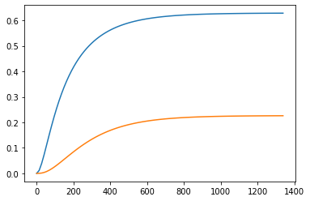
pole(ss)
array([-0.00523028, -0.01037927, -0.03679029, -0.03433577])
tf(ss,)